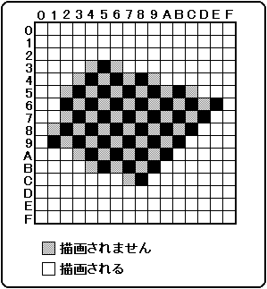
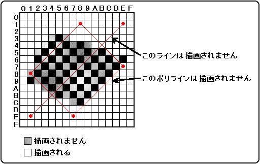

★HARDWARE Manual
★VDP1ユーザーズマニュアル
★HARDWARE Manual
★VDP1ユーザーズマニュアル
▲戻る｜
進む▼
VDP1ユーザーズマニュアル/第６章 コマンドテーブル
■メッシュ有効
- メッシュ有効ビット： mesh enable bit(Mesh)、ビット8
- パーツの描画コマンドのときメッシュ処理をするかどうかを指定します。0のときメッシュ処理をせず描画します。1のときメッシュ処理をして描画します。
Mesh | メッシュ有効 |
|---|
0 | メッシュ処理をせず描画 |
|---|
1 | メッシュ処理をして描画 |
|---|
- メッシュ処理を指定(Mesh=1)するとパーツは1ピクセルおきに、格子状に描画されます。「X座標値＋Y座標値」が偶数(XLSB XOR YLSB=0)のピクセルだけ描画され、奇数のビクセルは描画をスキップし、書き込みはされません。
45度のラインの始点が奇数座標の場合は、何も描画されません。45度で頂点が奇数座標のポリラインの場合も、描画されないことがあります。
図6.8 メッシュ処理

図6.9 ラインとポリラインのメッシュ処理

▲戻る｜
進む▼
★HARDWARE Manual
★VDP1ユーザーズマニュアル
Copyright SEGA ENTERPRISES, LTD., 1997